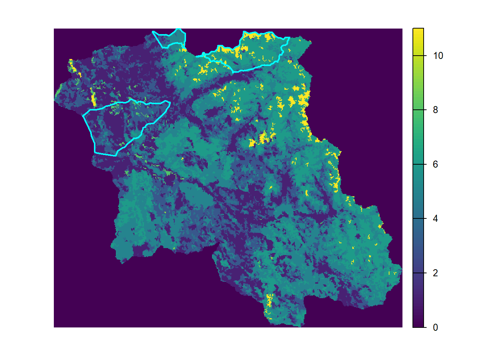

The summarize_representation_results() takes a table of network evaluation results from [evaluate_targets_using_catchments()] or [evaluate_targets_using_clip()] and summarizes either the number of classes passed, or the number of classes not passed (i.e. target gaps) by each network. Targets of zero are not counted. Rare targets are often difficult to meet, so can be used to drop targets that make up a small proportion of the total target area. For example would only consider targets covering at least 5% of the total target area.
network_evaluation_table: Data frame output from [evaluate_targets_using_catchments()], [evaluate_targets_using_clip()] or [evaluate_targets_using_networks()].
criteria_name: String representing the representation raster. Used to label the summary columns. Usually matches when using [evaluate_targets_using_catchments()].
target_pass_proportion: Numeric between 0 and 1 that sets the proportion of the target that needs to be met in order for the target to be considered ‘passed’. Defaults to 1 (i.e. 100% of the target needs to be met in the network).
target_inclusion_proportion: Numeric between 0 and 1. Target classes with a value less than are dropped. Defaults to 0 which includes all targets.
suffix: Optional suffix string to add to the end of the summary column name.
gaps: If TRUE, returns a summary column named e.g. with the number of missed targets. Otherwise returns a summary column named e.g. with the number of passed targets. Defaults to TRUE.
📤 Output
A tibble with columns and a summary column (e.g. ).
Examples
Running the examples
Download and unzip BEACONs R Tools
Run the examples below.
# Load librarieslibrary(sf)library(terra)library(dplyr)library(here)library(RColorBrewer)library(tidyr)# --------------------------------------# SET PARAMS --------------------# --------------------------------------# Set working directorydirpath <-here(".")setwd(dirpath)source("./R/representation.R")source("./R/utils.R")source("./R/spatial.R")#Set access path catchments_sf <-st_read(file.path(dirpath, "data/catchments_sample.shp"), quiet =TRUE)nalc <-rast(file.path(dirpath, "data/nalc_sample.tif"))reserves_sample <-st_read(file.path(dirpath, "data/reserves_sample.shp"), quiet =TRUE)refarea_sf <-st_read(file.path(dirpath, "data/reference_area_sample.shp"), quiet =TRUE)# Sum NALC values in each catchmentscatchments_nalc <-criteria_to_catchments(catchments_sf = catchments_sf, criteria_raster = nalc, criteria_name ="nalc", class_vals =unique(nalc))# Setting targettarget_table <-gen_targets(reference_sf = refarea_sf, representation_raster = nalc, reserve_size =100)print(as.data.frame(target_table))
Evaluating individual conservation areas created using Builder output
The first step in the representation analysis is to evaluate each conservation area individually to see if any meet the targets. We do this with evaluate_targets_using_catchments() which sums the class areas in each conservation area using the catchments and returns the class sums compared to the target values in a long table.
# Use the builder table to create polygonsconservation_area_polygons <-dissolve_catchments_from_table(catchments_sf = catchments_sf, input_table = builder_tab, out_feature_id ="network")
Evaluating existing protected areas
We will evaluate representation for some existing protected areas (clipped to our study region) using evaluate_targets_using_clip(). The output tables from evaluate_targets_using_clip() are the same format as from evaluate_targets_using_catchments().
# Plot the 3 existing reserves inside study regionplot(nalc, axes =FALSE)plot(reserves_sample$geometry, add=TRUE, lwd =2, border ='cyan')

# Evaluate the 3 reserves using the targetsreserves_results <-evaluate_targets_using_clip(conservation_areas_sf = reserves_sample, conservation_areas_id ="reserve", representation_raster = nalc, target_table = target_table)print(reserves_results)
At this point we have representation results for all individual conservation areas, as well as 3 existing protected areas. We can use summarize_representation_results() to rank all of these options in terms of representation. We first append the existing protected area results to the beaconsbuilder results to get everything in one table. We then summarize the results, requiring 100% of the targets to be met, but only considering targets that cover >=1% of the total target area (rare targets are difficult to represent and are often addressed as a separate part of a conservation analysis).
# Join the summary results to the polygonsconservation_area_polygons_nalc <- conservation_area_polygons %>%left_join(individual_summary, by ='network')# Map the conservation areas with the least representation gaps (i.e. 2 gaps)plot(nalc, axes =FALSE)plot(conservation_area_polygons_nalc$geometry[conservation_area_polygons_nalc$nalc_gaps==2], add =TRUE, border ='cyan', lwd =2)